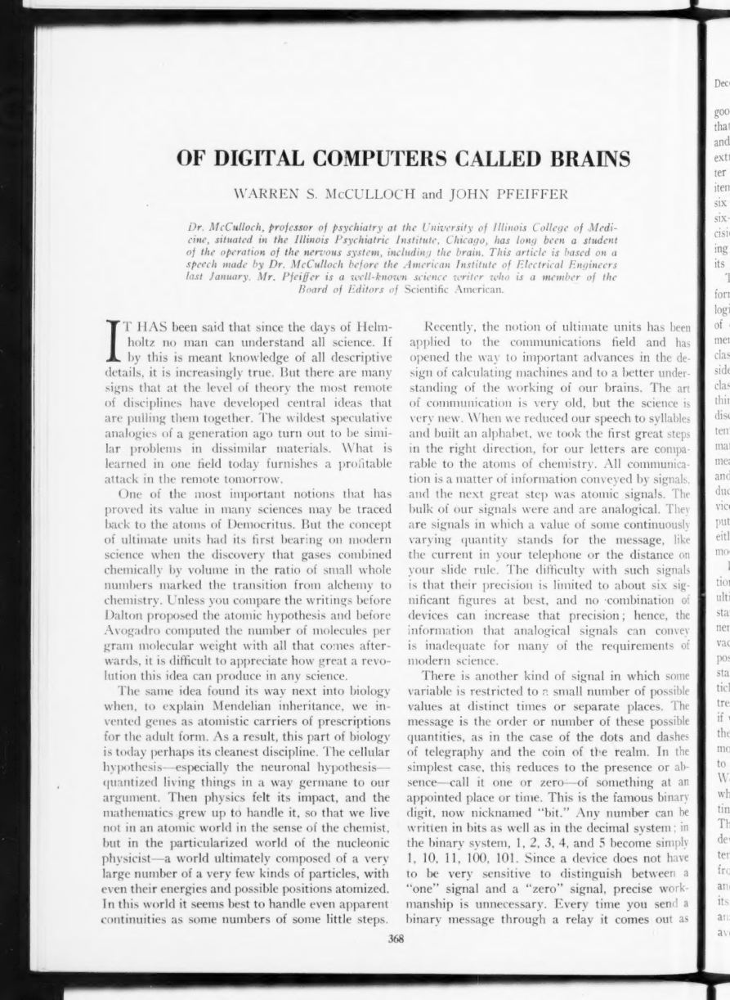
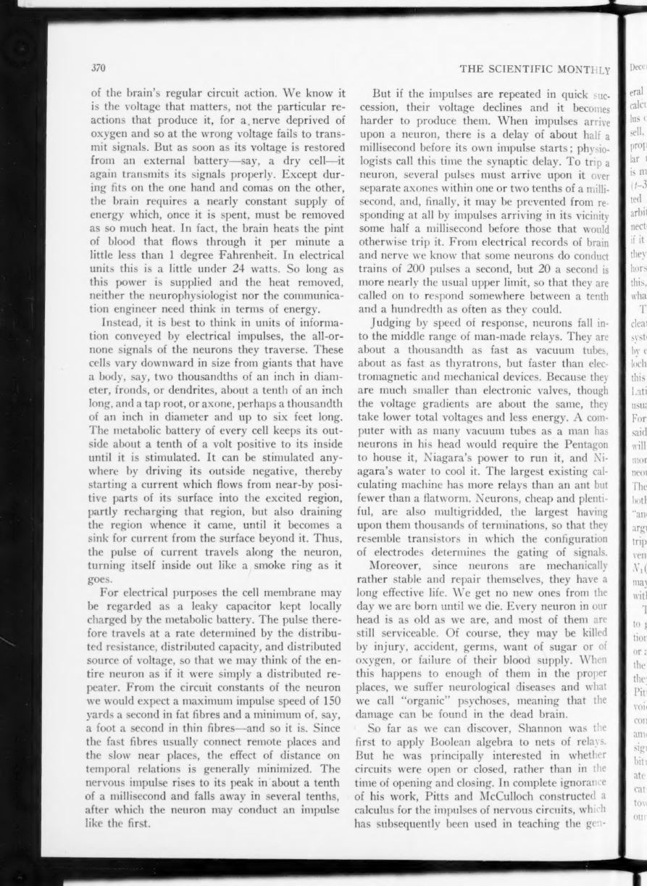
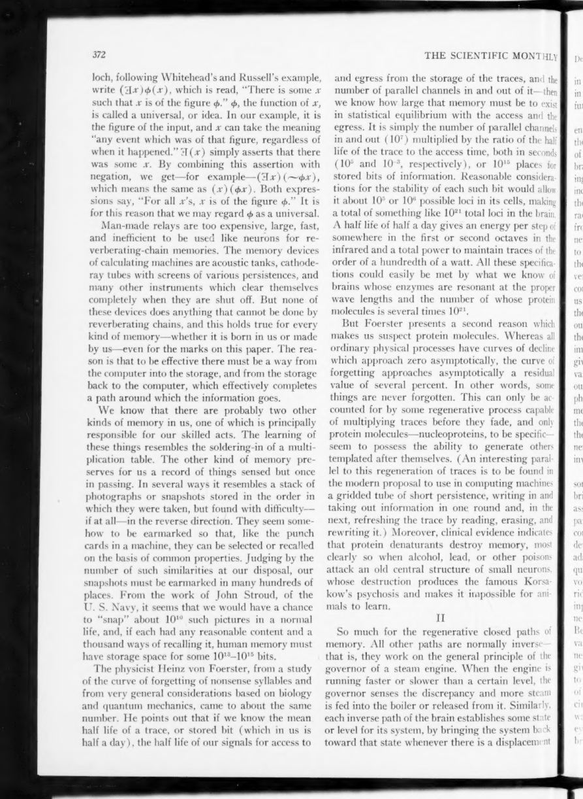
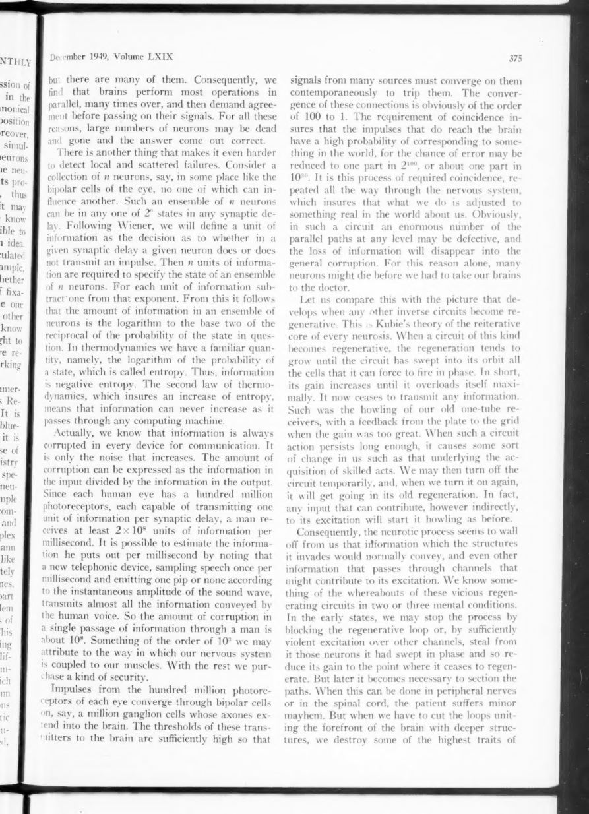
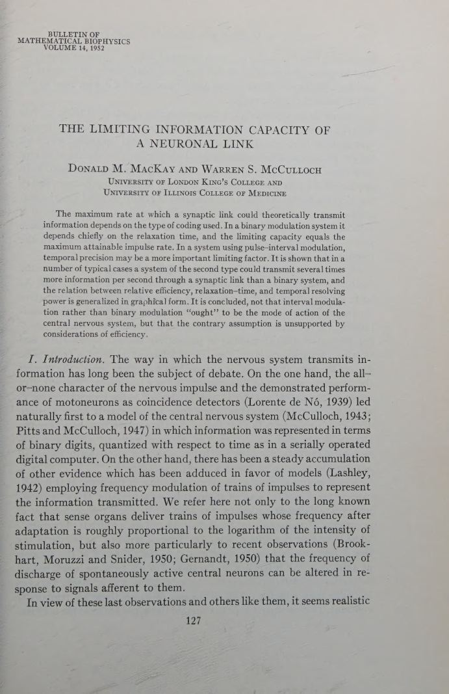
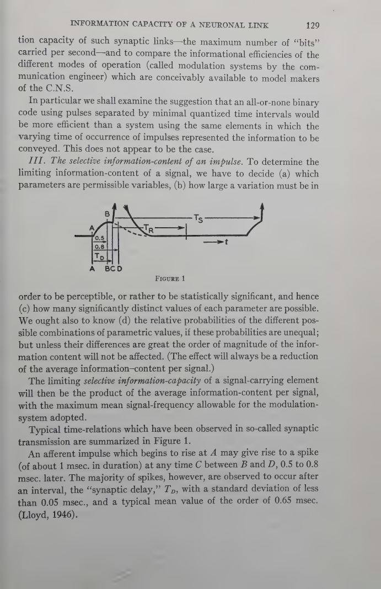
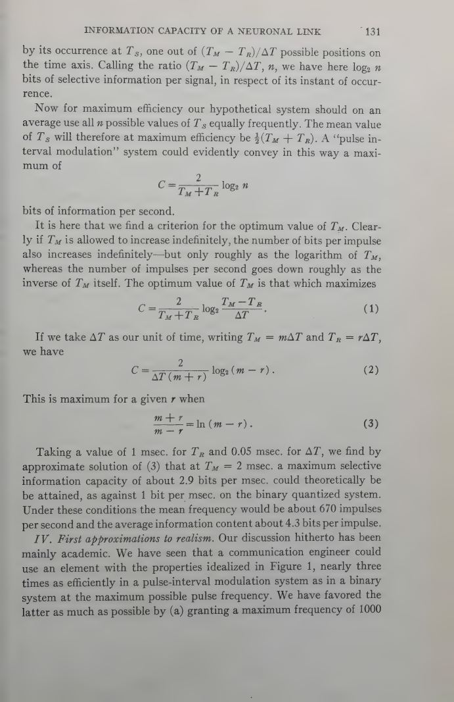

Scientific Monthly · 1949 · Bulletin of Mathematical Biophysics · 1952
The Computing BrainDigital computers, analog signals, and the capacity of a neuronal link
McCulloch and John Pfeiffer explain the brain as a digital computer made of all-or-none relays. Three years later, Donald MacKay and McCulloch calculate how much information a single synapse can carry — and find that the binary assumption is not the efficient one. The brain is digital; the digital/analog antithesis is unphysiological.
Read the plateThe thesis
The brain is a digital computer — but the digital/analog antithesis is false.
The 1949 essay is a popular introduction to the McCulloch–Pitts picture. Communication has atoms: the bit, the all-or-none impulse. A device of binary organs has possible states. The brain, with its ten billion neurons, can be described as a digital machine — and the description buys reliability, redundancy, and a theory of memory.
The 1952 paper asks a sharper question. How much information can one synaptic link carry? The answer depends on the coding. A time-quantized binary code gives about one bit per refractory period. A pulse-interval code can give several times more, because the precise timing of an impulse is itself a variable. The conclusion is deflationary: nobody should assume the nervous system ought to be binary.
The phrase to keep: “We believe [the analogical versus digital question] to represent an unphysiological antithesis.” The brain uses both, and the interesting question is the code.
Laboratory 01 · atoms of communication
Six significant figures, or as many bits as you like.
An analog signal carries its message in a continuous quantity; its precision is limited by noise and craft, roughly six significant figures at best. A digital signal carries it in discrete decisions; add a bit and you add precision at no extra cost per bit. Move the slider and watch the staircase refine.
Quantise the message
The smooth curve is the analog signal; the staircase is the digital copy. The number of levels is . The quantisation error is half a step.
levels64
max relative error7.81e-3
decimal precision1.81 digits
Laboratory 02 · the capacity of a link
The same synapse, two codings.
MacKay and McCulloch compare a time-quantized binary code with pulse-interval modulation. In the binary code the capacity is set by the dead time . In the interval code the precise timing of each impulse carries extra information, limited by the temporal resolution . Tune the three parameters and watch the curves separate.
How much can one synapse say?
The dashed line is the binary capacity; the curve is interval modulation. The dotted vertical line is the optimum interval for the current dead time and temporal precision.
binary1.00
interval2.88
optimum Tₘ2.00 ms
gain2.88×
The calculation
Two capacities, one link.
The binary system can send at most one impulse per dead time, so its capacity is . The interval system chooses one of possible positions for each impulse, and its mean interval is . The result is a capacity that can be several times larger — and an optimum interval that the nervous system need not actually use.
Time-quantized binary. One bit per dead time. At , this is one bit per millisecond.
Pulse-interval modulation. The number of distinguishable positions grows with the interval; the number of impulses per second falls. The product has an optimum.
The optimum. With and , the optimum is near and bits/ms — about three times the binary capacity.
The voice
Atoms, bits, and the will.
“All communication is a matter of information conveyed by signals; and the next great step was atomic signals.”
“The difficulty with such [analogical] signals is that their precision is limited to about six significant figures at best, and no combination of devices can increase that precision.”
“A device of n binary component organs … has 2ⁿ possible states.”
“The impulses descending from our brains … may so determine their behavior that something else may happen instead of what we intend. This compels us to distinguish between what we will and what we shall do.”
“It is concluded, not that interval modulation rather than binary modulation ‘ought’ to be the mode of action of the central nervous system, but that the contrary assumption is unsupported by considerations of efficiency.”
“At the maximum pulse frequency normally attainable, the binary system would be inferior to the other by a factor of 2 or 3 at least.”
The papers themselves
Pages from 1949 and 1952
click to enlarge







Why it matters
The code is the question.
The 1949 essay gives the classic picture of the brain as a digital computer. The 1952 paper complicates it: the same all-or-none impulse can carry information in its presence, its timing, or both. The debate between rate coding and temporal coding in modern neuroscience is already here, stated with unusual clarity.
The deeper lesson is methodological. Do not assume the nervous system uses the code that is easiest to draw. Calculate the capacity, compare the codings, and let the physiology decide. That is the McCulloch style at its best.
Read next: the mathematical foundation Pitts laid before the 1943 calculus — linear networks, stability, and the inverse network problem.